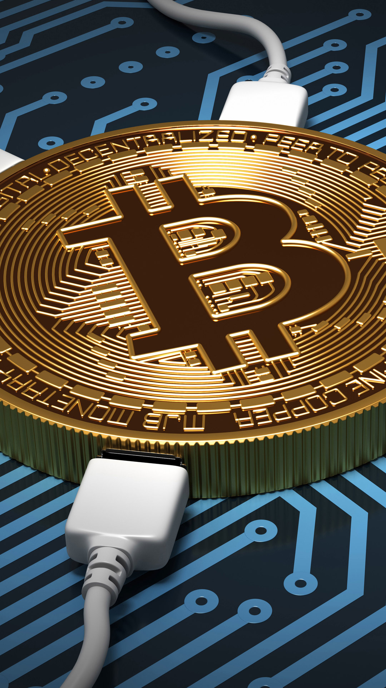
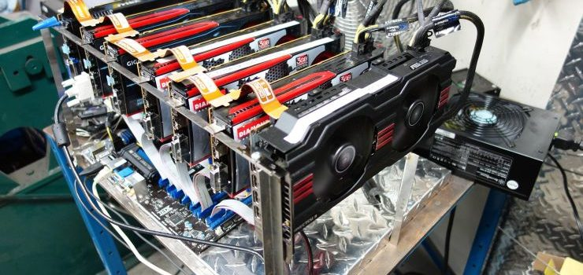
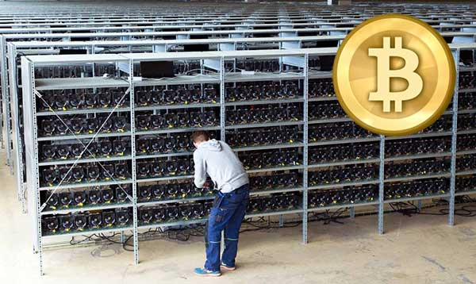
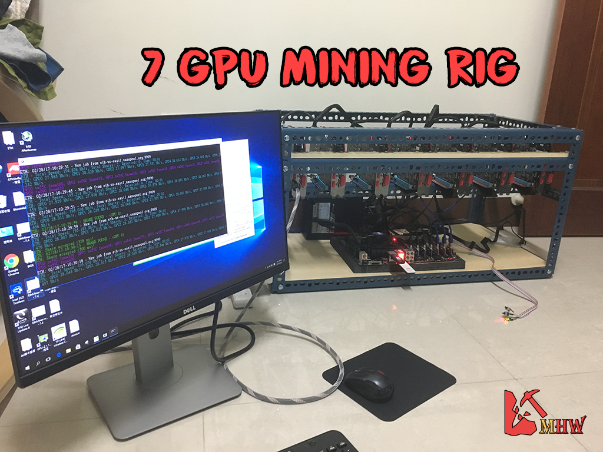

O que são BitCoins?
A bitcoin é uma moeda, assim como o real ou o dólar, mas bem diferente dos exemplos citados. O primeiro motivo é que não é possível mexer no bolso da calça e encontrar uma delas esquecida. Ela não existe fisicamente, é totalmente virtual.

O outro motivo é que sua emissão não é controlada por um Banco Central. Ela é produzida de forma descentralizada por milhares de computadores, mantidos por pessoas que “emprestam” a capacidade de suas máquinas para criar bitcoins e registrar todas as transações feitas.
No processo de nascimento de uma bitcoin, chamado de “mineração”, os computadores conectados à rede competem entre si na resolução de problemas matemáticos. Quem ganha, recebe um bloco da moeda.
O nível de dificuldade dos desafios é ajustado pela rede, para que a moeda cresça dentro de uma faixa limitada, que é de até 21 milhões de unidades até o ano de 2140.
Esse limite foi estabelecido pelo criador da moeda, um desenvolvedor misterioso chamado Satoshi Nakamoto — que, até hoje, nunca teve a identidade comprovada.
Mineração

O bitcoin existe desde 2009, mas recentemente passou a dominar as manchetes ao redor do mundo com sua enorme valorização. Ao contrário das notas e moedas em seu bolso, ele não é produzido por governos ou bancos e só existe virtualmente.
Cerca de 3,6 mil novos bitcoins são criados todos os dias por um processo complexo conhecido como "mineração", em que computadores processam equações matemáticas por meio de um programa específico e, em troca, recebem uma recompensa com a moeda.
Milhares de máquinas em todo o planeta trabalham dia e noite com esse objetivo, e isso exige muita eletricidade. E, conforme o valor do bitcoin cresce, mais e mais amadores e profissionais conectam seus computadores a esse sistema para minerar a moeda.
Com isso, aumenta também a curiosidade em torno do gasto de energia envolvido. Redes sociais como o Twitter estão repletas de teorias sobre o assunto.
"Sobre o bitcoin... na verdade, está arruinando o planeta. A rede de computadores do bitcoin usa tanta eletricidade quando a Dinamarca. Em 18 meses, usará o mesmo que os Estados Unidos. Alguém precisa ceder. Isso simplesmente não pode continuar assim", tuitou Eric Holthaus, autor de um artigo no site Grist, dedicado temas em torno da sustentabilidade.
"O consumo de energia relacionado à mineração de #bitcoin é enorme e pode não ser sustentável: hoje, supera 30 terawatts por hora (TWh), mais do que a Irlanda", publicou o executivo Gilles Cochevelou, chefe de operação digital da empresa de petróleo e gás Total, ao lado de link para uma reportagem do jornal britânico The Guardian sobre o assunto.

A resposta mais breve é que é difícil de dizer, já que faltam fontes com autoridade suficiente para falar do uso de energia por moedas digitais como o bitcoin. Como se trata de uma rede descentralizada, é complicado ter uma visão geral de algo além de seu valor.
A prática de minerar bitcoins significa que um computador faz cálculos matemáticos complexos para solucionar uma equação criptográfica. Isso serve para verificar e validar transações com a moeda, evitando fraudes.
Cada vez que esse algoritmo é solucionado, "blocos" são adicionados à chamada "blockchain", uma espécie de livro de registro digital que garante a autenticidade de cada transação já feita. O dono da máquina que consegue resolver a equação recebe bitcoins em troca pelo serviço prestado.
O site de compartilhamento de arquivos The Pirate Bay foi acusado de instalar nos computadores das pessoas que o visitam um software que faz as máquinas desses usuários minerarem bitcoins para o portal sem seu conhecimento. No Brasil, o site de notícias Jornalivre, mantido por apoiadores do Movimento Brasil Livre, esteve no centro de uma polêmica pelo mesmo motivo.
Em ambos os casos, os sites disseram que estavam testando uma alternativa de receita. O Pirate Bay afirmou ter restringido a prática, e o Jornalivre disse tê-la abandonado após reclamações de leitores.
Custos
Uma fórmula muito usada para calcular o consumo de energia envolvido nessa atividade é a do blog Digiconomist, baseada na especificações de performance de tecnologias de mineração.
O cálculo usa a receita com a mineração como ponto de partida, estimando o custo operacional da atividade como um percentual dos ganhos financeiros e convertendo esses custos em consumo de energia com base no preço médio da eletricidade.
De acordo com esse método, o consumo anual de eletricidade é calculado em 32,56 (TWh). É com base nisso que são feitas as comparações com países.

Valorização
Mas esse método se baseia em suposições e estimativas, algo que o Digiconomist reconhece logo de partida. Então, não é uma surpresa que seja alvo de críticas.
Marc Bevand, um analista especializado em moedas digitais, diz que ele está incorreto, porque não leva em conta tecnologias novas e com maior eficiência energética usadas por mineradores, acrescentando que a fórmula "pressupõe erroneamente que um percentual fixo de 60% da receita com mineração é gasto com eletricidade".
A revista de negócios americana Forbes divulgou no fim de outubro que a estimativa de valor de mercado de todos os bitcoins em circulação superou o de empresas como o banco de investimentos Goldman Sachs e o grupo de comércio eletrônico eBay.
Com tal destaque para essa moeda, era inevitável que fossem feitas comparações com países, mas, independentemente da forma como se decida medir o consumo de energia com bitcoin e outras moedas digitais, há ao menos um ponto de consenso.
Assim como com qualquer produto digital ou físico, seu futuro será determinado pelo custo-benefício de produzi-lo. Atualmente, há 16,7 milhões de bitcoins em circulação, um número que continuará a aumentar até chegar a 21 milhões, o limite máximo imposto pelas regras que regem essa moeda.
Então, enquanto a eletricidade continuar a ser uma fonte de energia barata e confiável e o valor da moeda digital for alto o suficiente para absorver os custos de produção, o bitcoin continuará a estar nas manchetes até atingir seu volume máximo em circulação.